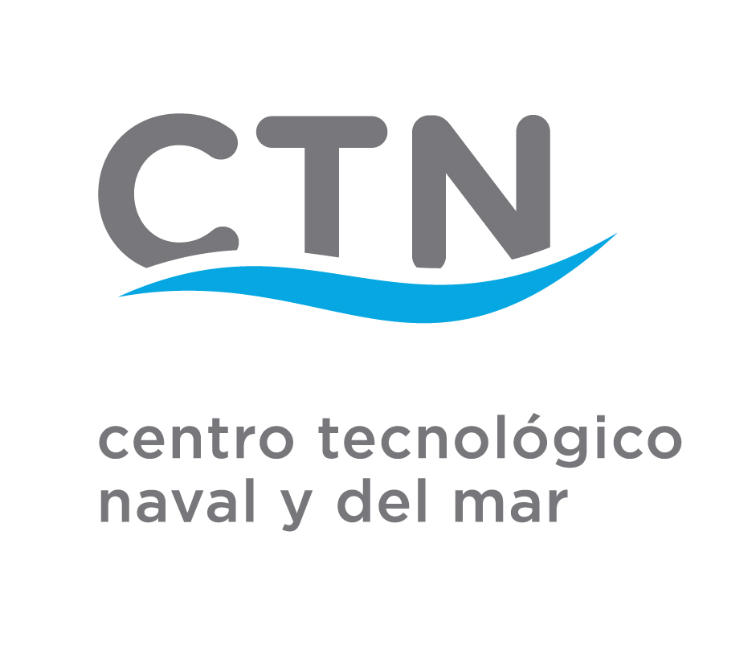
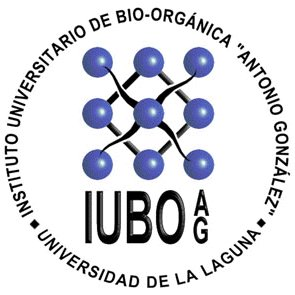

Marine Biology · Biodiversity & Conservation
Laura Cagide Carrillo
Marine biologist with practical experience in aquatic organism handling, monitoring, and applied marine research. My background combines marine ecology, biodiversity, organism physiology, biological data analysis, and the study of carbon cycling and its effects on marine organisms.
I am especially interested in marine ecological processes, organism-environment interactions, and the biological carbon pump as a key mechanism linking ocean life, carbon sequestration, and global environmental change.
About me
A marine-themed professional landing page designed to present research experience, technical skills, academic background, and scientific interests with a stronger focus on marine ecology and the biological carbon pump.
My experience includes aquatic animal care, environmental monitoring, physicochemical water analysis, plasma and lipid analysis, environmental enrichment, and handling of marine species in both natural and controlled environments. I enjoy multidisciplinary work that connects marine biology with practical field and laboratory applications.
I also have a strong interest in scientific communication, sustainability, aquaculture systems, and digital tools that support research, data processing, and knowledge transfer.
Core skills
Aquatic organism handling
Aquaculture systems
Environmental monitoring
Physicochemical water analysis
Plasma and lipid analysis
Environmental enrichment
SPSS
Excel
Python
Canva
AI tools
Scientific reporting
Work experience
Hands-on experience across marine aquaculture, marine animal care, organism monitoring, and marine natural products research.
- Supported the digitalisation and visibility of laboratory activities and research-related outputs.
- Designed technical materials and contributed to scientific outreach and knowledge-transfer tasks.
- Assisted in the identification and preliminary assessment of collaboration opportunities with external entities.
- Contributed to science communication initiatives aimed at improving the accessibility and dissemination of laboratory work.
- Integrated multitrophic aquaculture systems.
- Lipid and plasma analysis.
- Handling and study of marine species.
- Morphometric measurements and anaesthesia trials.
- Data analysis.
- Optimisation of culture systems and monitoring of environmental and physicochemical parameters.
- Design of environmental enrichment for marine species.

- Supervision and care of marine cultures.
- Maintenance and repair of aquaculture facilities and equipment.
- Collaboration in feeding tasks and monitoring of environmental parameters.
- Implementation of good aquaculture practices under safety and quality protocols.

- Secondary metabolite research.
- Toxin research.
- Biological activity assessment.
- Extraction techniques.
Education
Academic foundation focused on marine ecosystems, biodiversity, conservation, and biology.
Degrees
- 2025 — Master’s Degree in Marine Biology: Biodiversity and Conservation. University of La Laguna.
- 2023 — Bachelor’s Degree in Biology. Faculty of Sciences, University of La Laguna.
Professional strengths
Courses and additional training
Complementary training in innovation, digitalisation, analytics, biology, communication, safety, and marine interpretation.
- 2026 DIGINNOVA Training Programme: Innovation, Digitalisation and Sustainability (480 hours).
- 2025 Marine Environment Interpreter (45 hours).
- 2025 Statistical Analysis with SPSS (120 hours).
- 2025 Programming and Data Analysis with R (120 hours).
- 2025 Excel (8 hours).
- 2025 Artificial Intelligence with Python (220 hours).
- 2025 Emergency Intervention Course (ERBE) (15 hours).
- 2025 Fundamentals of Artificial Intelligence (97 hours).
- 2025 Occupational Risk Prevention (60 hours).
- 2023 Introduction to Systems Biology (19 hours).
- 2023 Introduction to Biological Rhythms and Clocks (32 hours).
- 2023 Introduction to Seaweeds (26 hours).
- 2022 Food Analysis: Food Safety (50 hours).
- 2022 How to Speak in Public? Oratory, Argumentation, and Debate for Everyday Life (50 hours).
- 2022 Introduction to the Care and Use of Laboratory Animals.
- 2021 Canary Federation of Underwater Activities (FEDECAS) Course: License B-1E.
Scientific activity and certificates
Scientific communication, congress participation, outreach, and continued academic engagement.
Academic and scientific activity
- 2025 Scientific poster presented at an international conference: Innovative farming strategies for co-feeding omnivorous fish by reusing wastes from carnivorous fish. Aquaculture Morocco International Conference, Agadir (Morocco).
- 2025 Outreach talk: “Plastic Beaches”. Teobaldo Power Secondary School.
- 2025 Participation in the XXXII Science Fair, La Orotava.
- 2024 Open Day 2024. Canary Islands Oceanographic Centre (IEO-CSIC).
- 2024 Academic/Research activity: “Multidisciplinary Field Trip 2023–2024”.
Certificates
- 2025 Attendance at the PÉLAGOS Conference: A Space for Ocean Science in the Canary Islands.
- 2023 B2 English. Language Service of the University of La Laguna. Linguaskill (Cambridge) certification.
- 2022 Attendance at the 24th Antonio González Scientific Week.
- 2022 Attendance at the 10th Student Congress of the Biology Section.
- 2020 Attendance at the 15th Genetics Conference.